Missing Links — Lisbon’s Botanical Garden, Unfolded into the City
Honourable Mention, Botanical Turn 2026 — Lisbon
Botanical Turn was jointly organised by Non-a and the Naturescapes EU Project, co-funded by the European Union, in collaboration with the University of Lisbon and the Instituto de Ciências Sociais da Universidade de Lisboa (ICS-ULisboa).
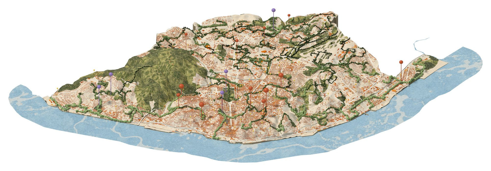
Project Overview
Missing Links transforms Lisbon’s Botanical Gardens from enclosed repositories of biodiversity and knowledge into a distributed living infrastructure, reconnecting plants, people and the urban fabric. Where you live in Lisbon shapes which green spaces you can reach on foot: the analysis estimates that 46% of the city’s residential floor area lies more than a 300-metre walk from a green space of at least 0.5 hectares.
The project builds on Lisbon’s 1997 Plano Verde, led by landscape architect Gonçalo Ribeiro Telles, which applied the principle of Continuum Naturale to the city, linking green spaces, valleys and ridges through a network of corridors. Missing Links proposes new connections where streets can support planting. Together, these routes form a linear botanical garden: walking the corridor means walking through the collection.
The strategy operates through three interconnected scales. A city-wide network establishes ecological continuity; strategic Nodes create places of encounter between plants, knowledge and public life; and Seed Banks distribute plants, seeds and botanical knowledge, particularly where green-space provision remains insufficient.
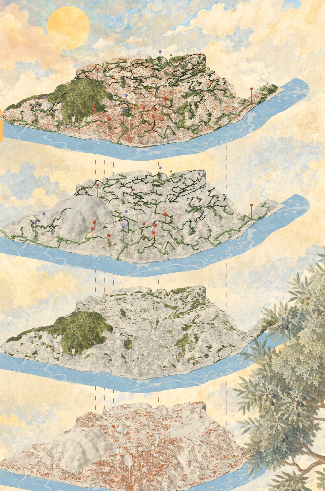
The City Scale: Measuring the Missing Links
Distances are walked, not straight-line: the pedestrian network includes Lisbon’s 3,116 stairways and is slope-adjusted with Tobler’s hiking function, so they are metres a person feels. Streets were scored for plantability, and a minimum spanning tree across 353 green spaces defines the 204 km trunk, with 50 km of capillaries reaching into the deficit. Rather than the shortest routes between green spaces, the network follows the most plantable ones.
Every stretch is then scored for five jobs from the ground it sits in: sponge street, urban forest, productive landscape, urban biotope and pollinator axis. Where no job clearly wins, the stretch stays undecided rather than being assigned without sufficient justification. The collection follows the same logic, with each plant chosen for site suitability and function.
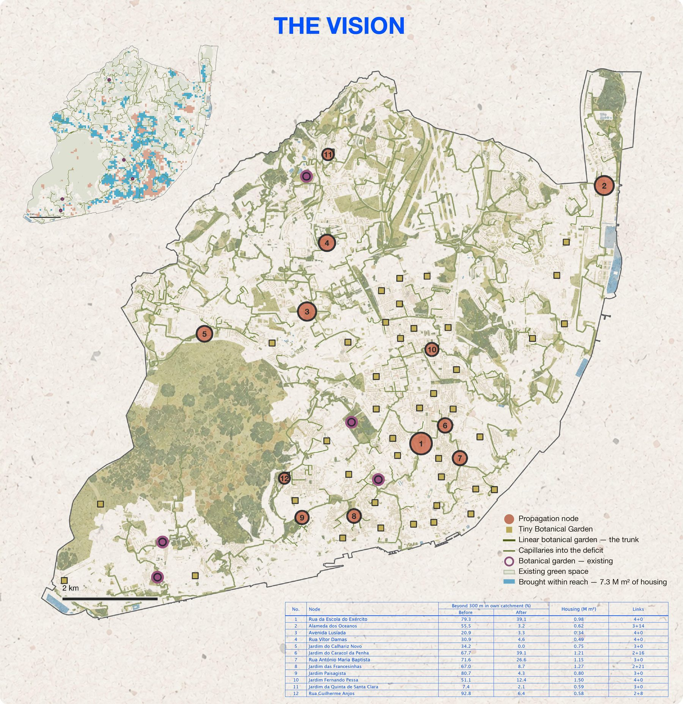
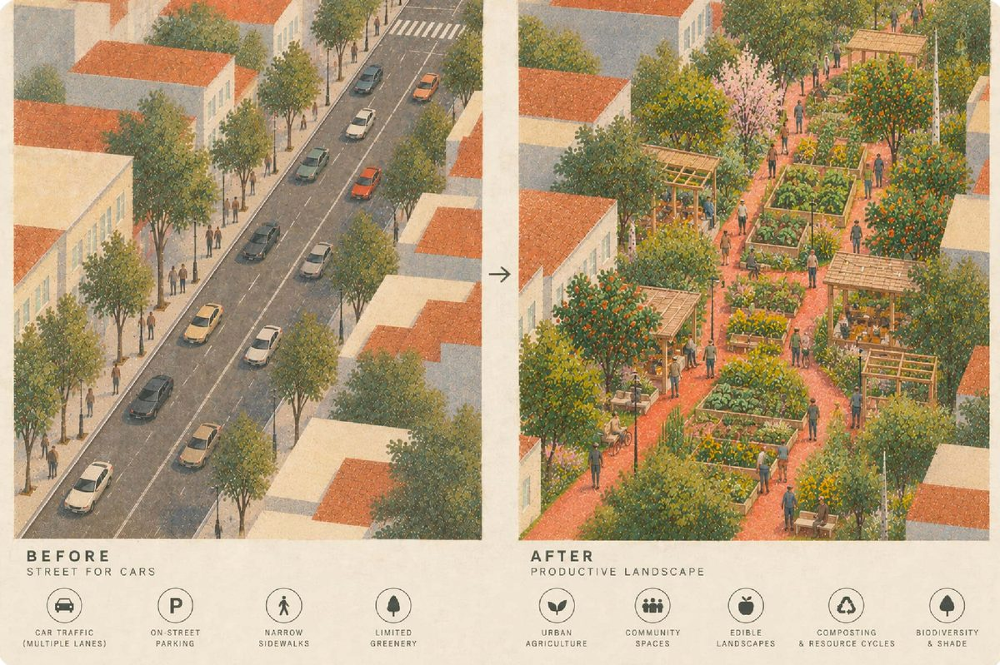
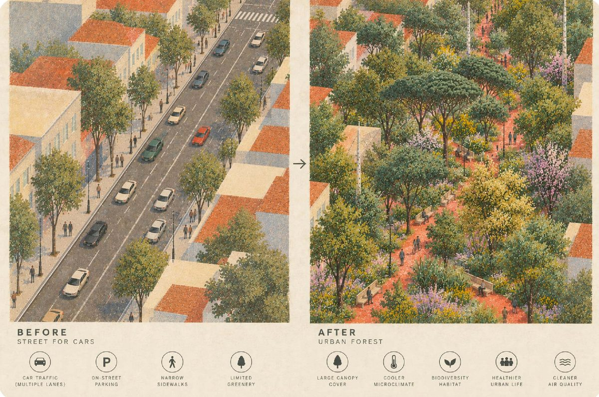
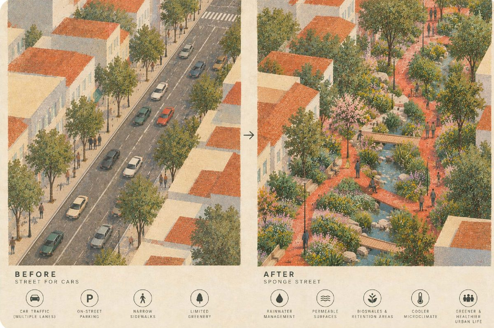
The Node: Jardim das Francesinhas
The Node is where the project manifests spatially. Two trunk corridors and twenty-one capillaries converge on the Jardim das Francesinhas, a public garden between the Assembleia da República and the ISEG campus of the Universidade de Lisboa. It connects the network with the street and the prototype, disseminates plants, seeds and knowledge, and activates the neighbourhood.
Within a fifteen-minute walk, the surrounding area contains 1.27 million m² of housing, of which 67% lies beyond a 300 m walk from qualifying green space. The Node and 10.2 km of green-network interventions within its catchment reduce this share to 8.7%, while the mean walking distance falls from 385 m to 135 m.
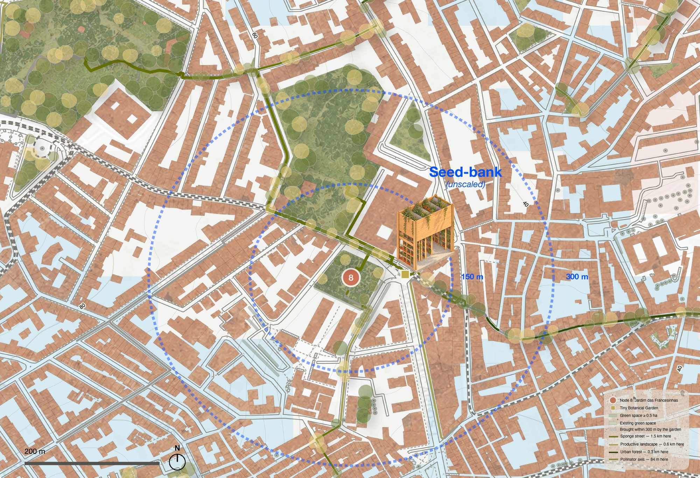
The Prototype: Seed Banks
The Seed Bank is a compact extension of the Botanical Garden that makes plants, seeds and botanical knowledge accessible within everyday urban space. Each one combines knowledge transfer and plant propagation: seeds and young plants are collected, propagated and distributed, and residents can cultivate them at home or contribute them to the green corridors, becoming active participants in the network.
Within its 2.5 × 5 m footprint and 5.18 m height, the prototype works as seed repository, propagation space and learning environment. Its timber structure rests on demountable steel screw piles, avoiding concrete and minimising ground disturbance, while timber and perforated-metal panels hung from metal rails allow it to be opened, closed, dismantled and relocated.
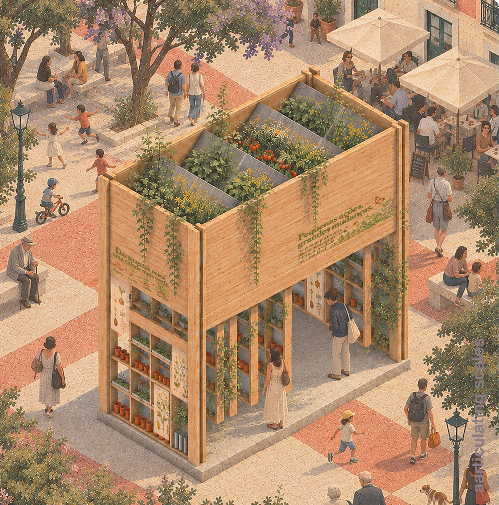
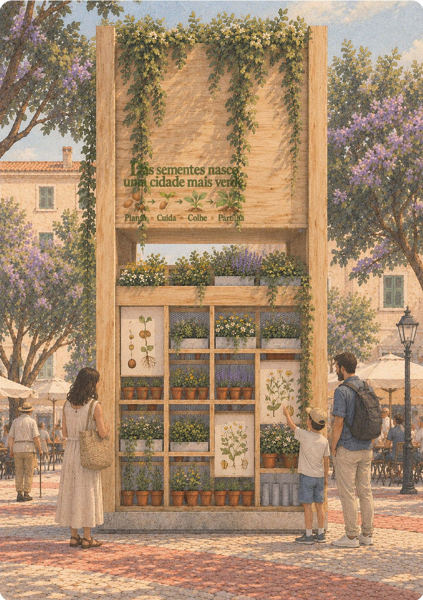
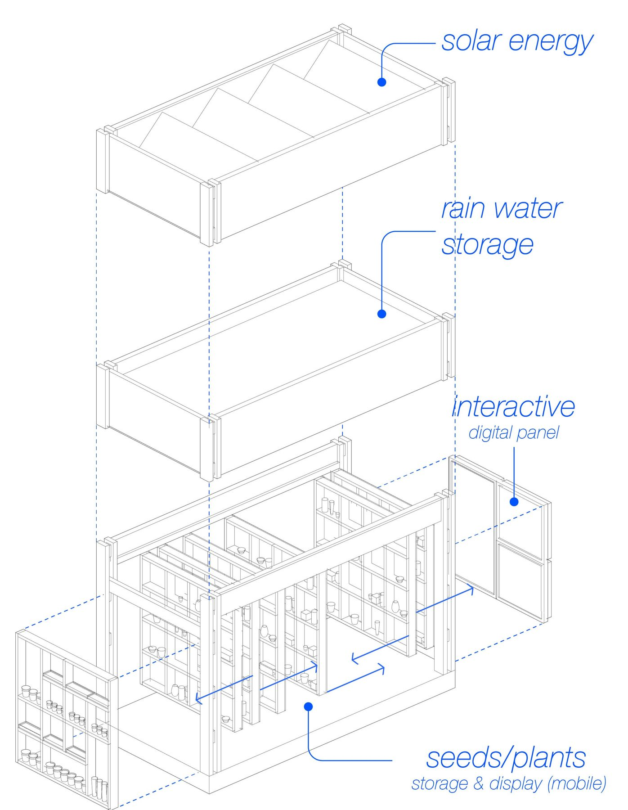
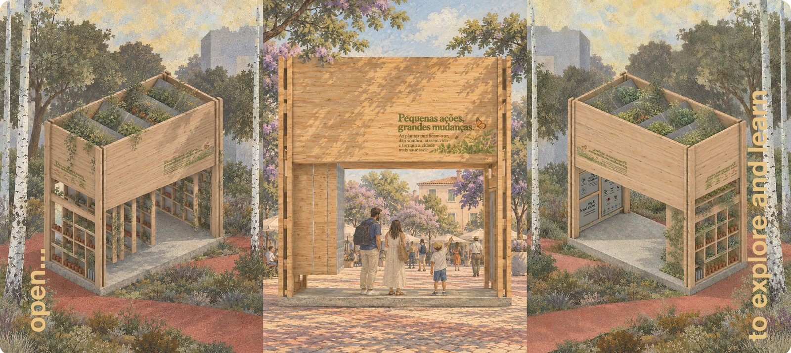
Competition Boards
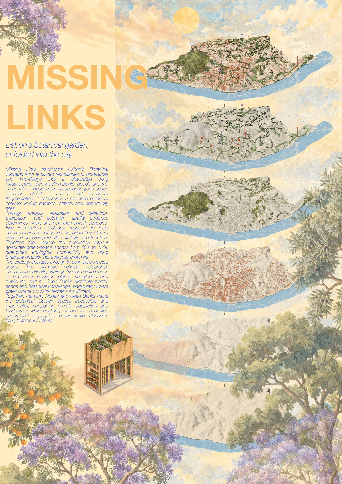
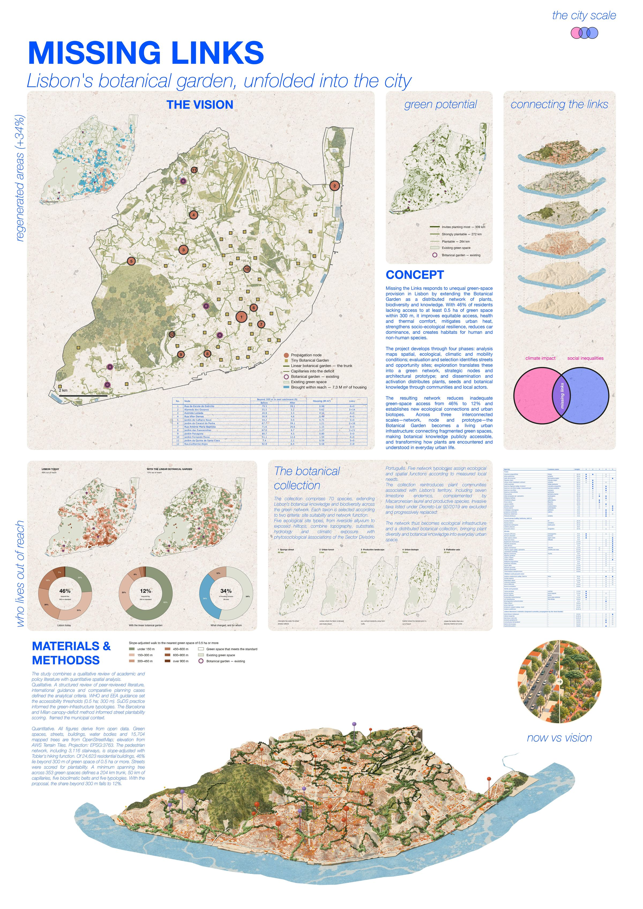
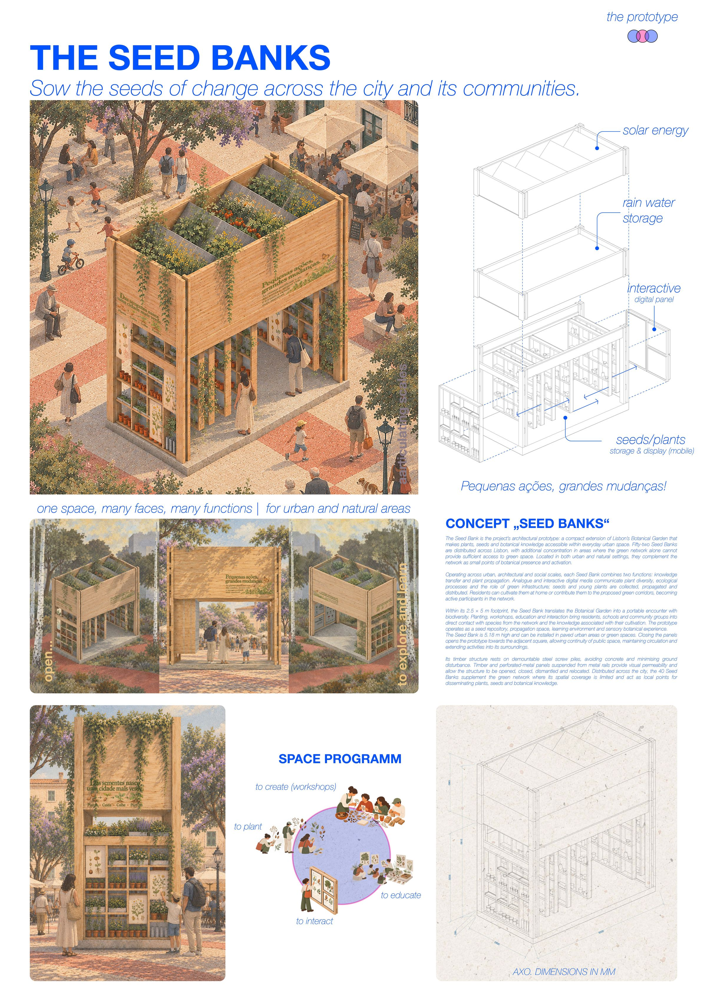
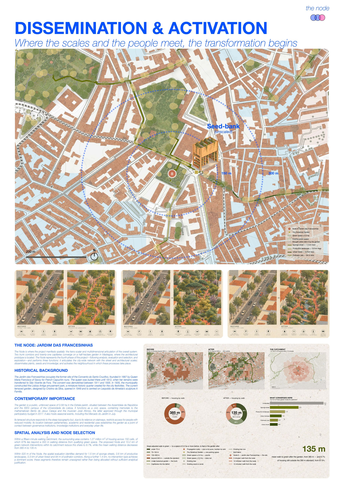
Award and Acknowledgement
Missing Links received an Honourable Mention in Botanical Turn 2026, for Lisbon. Botanical Turn was jointly organised by Non-a and the Naturescapes EU Project, co-funded by the European Union, in collaboration with the University of Lisbon and the Instituto de Ciências Sociais da Universidade de Lisboa (ICS-ULisboa).
The NATURESCAPES project is funded by the European Union under Grant Agreement No 101084341. Views and opinions expressed are however those of the author(s) only and do not necessarily reflect those of the European Union. Neither the European Union nor the granting authority can be held responsible for them.
Credits
Missing Links by Christian Corral Burau, Proyectual Studio. Spatial analysis based on open data: © OpenStreetMap contributors (ODbL) and AWS Terrain Tiles.